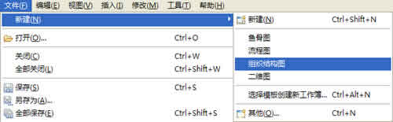
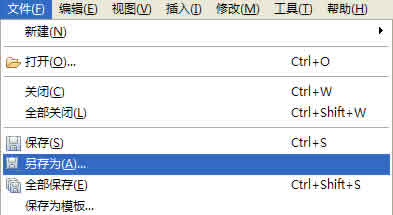
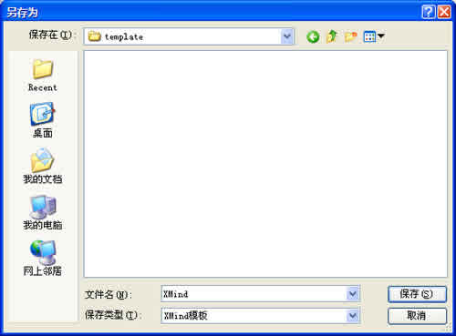

XMind中的模板是独立的".XMT"文件。它们可以单独传播。XMind自带了5种简易的模板：缺省模板、鱼骨图、流程图、组织结构图以及二维图。XMind还允许并鼓励用户创建属于自己的的思维图模板。方法如下：
按照下列方法使用XMind自带的模板：
- 在菜单栏选择&"文件 > 新建"然后选择合适的模板。
- 在XMind工具栏点击新建按钮，选择合适的模板。

按照下列步骤创建您自己的模板：
- 按照您的需要新建一张思维图：
- 选择主题的样式，包括字体、形状、颜色等等；
- 选择线条的形状、颜色；
- 确定思维图的样式，例如：墙纸、背景色、透明度、图例等等。
- 在菜单栏选择“文件 > 保存为模板…”；
- 选择模板文件保存位置并保存。


注意：
- 使用快捷键"Ctrl+N"可以直接创建使用缺省模板的新图。
- 您有两种方法打开您自己的模板：
- 在菜单栏选择"文件 > 新建 > 选择模板"。
- 使用快捷键"Ctrl+Shift+N"。
您可能还对下列内容感兴趣：